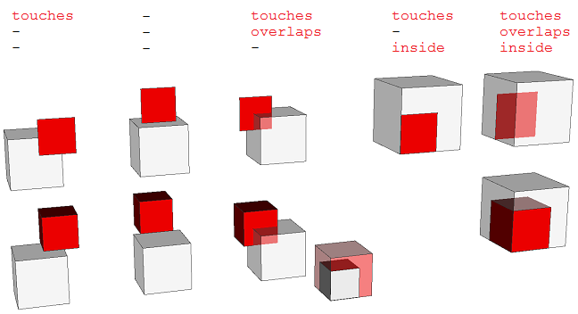
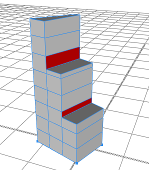
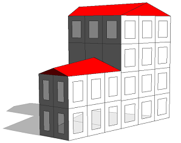
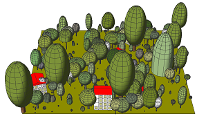
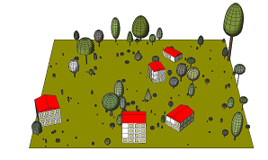
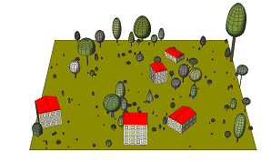
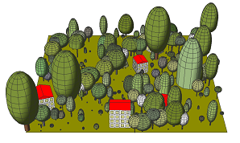
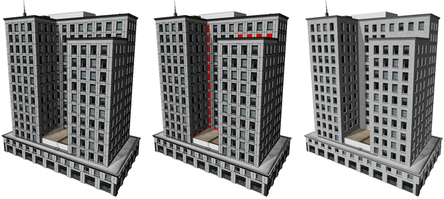

inside / overlaps / touches (occlusion queries)
Synopsis
bool inside()
bool overlaps()
bool touches()
bool inside(target-selector)
bool overlaps(target-selector)
bool touches(target-selector)
bool inside(target-selector, label)
bool overlaps(target-selector, label)
bool touches(target-selector, label)
Parameters
- target-selector (keyword)
Target selector for the query:- intra: Checks against occluder shapes in the same shape tree (i.e. from the same inital shape).
- inter: Checks against occluder shapes in other shape trees (i.e. generated by other initial shapes in the neighborhood).
- all: Checks both intra and inter.
- label (string)
Given a label identifier the occlusion query is performed only on occluder shapes that match the requested label. An empty label will behave as an unlabeled occlusion query.
Returns
true if the geometry of the current shape lies fully inside, overlaps, or touches the closed geometry of another shape respectively, otherwise false.
An occlusion query tests for intersections between shapes. There are three different boolean functions available to examine the spatial context of the geometry of the current shape:
- inside() returns true if the geometry of the current shape lies completely inside or completely on the surface of one of the closed geometries specified by target-selector and label.
- overlaps() returns true if the geometry of the current shape lies partly or completely inside of one of the closed geometries specified by target-selector and label (or vice-versa).
- touches() returns true if the geometry of the current shape overlaps or has a planar contact with one of the closed geometries specified by target-selector and label.

A visual definition of the three occlusion functions (in white: occluder shapes; in red: query shapes).
In any case, tests are only performed against geometries which form a closed surface (i.e. a waterproof mesh which has no boundary edges).
Learn more about important characteristics for occlusion queries in conditions and inter occlusion.
Unlabeled occlusion queries
In case no label is given or the label is empty, the geometry of the current shape is tested against a practical selection of closed occluder geometries that are automatically generated with the ruleset:
- Leaf shapes.
- Shapes on which a component split or offset has been applied. These operations represent typically the transition from mass to surface. Furthermore, these operations are typically applied on simple geometries which can be tested efficiently against occlusion.
- Any labeled occluder shape.
Intra occlusion
Intra occlusion queries are only performed against geometries that are neither a parent/ancestor nor a child/descendant of the query shape since they most likely occlude the current shape due to the top-down grammar modeling approach.
Related
Examples
Intra occlusion
 |
Init --> extrude(15)
split(x) { ~5 : Step }*
Step --> s('1, '0.7 * (split.index + 1), '1)
comp(f) { side : Facade | top : X. }
Facade --> split(y) { 4 : Tile }*
Tile --> case touches(intra) : color(1,0,0) X.
else : X.
This example demonstrates the result of the touches() occlusion query on shapes of one shape tree (intra occlusion). As there is no label given, the occlusion query will test against automatically generated occluder shapes: the closed geometries on which the component split is applied. Note that each occlusion query does not consider predecessor occluder shapes, namely the component split volume that a Tile originates from. The leaf shapes constructed in the component split and in the conditional false case are not considered as they do not form a closed geometry. |
Inter occlusion
 |
House --> extrude(5+rand(20))
comp(f) { side : Facade | top : Roof }
Roof --> roofGable(20) color(1,0,0)
Facade --> split(y) { ~5 : split(x) { ~5 : Tile }* }*
Tile --> case inside(inter) : NIL
case touches(inter) : Wall.
else : setback(1) { all : Wall. | remainder : NIL }
In this example the House rule is applied to two neighboring initial shapes (inter occlusion). Closed occluder shapes are automatically created: Blocks (component split) and roofs (leaf shapes). Further leaf shapes are not considered as they do not form a closed surface. The inside() query prevents the insertion of tiles that are not visible because they are occluded by neighboring blocks or roofs. The touches() query prevents the creation of windows that occlude neighboring blocks or roofs and inserts a wall instead. |
Labels
 |
Field --> Ground
scatter(surface, rand(500), uniform) { Place }
Ground --> color(0,0.5,0)
Place --> 1% : PlaceHouse else : PlaceRandomTree
PlaceHouse --> r(0,rand(180),0)
primitiveQuad(10+rand(10), 10+rand(10))
House
PlaceTree --> i(fileRandom("/assets/*.obj"))
Tile --> case inside(intra) : NIL
case touches(intra) : Wall.
else : setback(1) { all : Wall. | remainder : NIL }
In this example the Field rule is applied to one rectangular initial shape (intra occlusion). Beside houses, also random closed tree assets are scattered on the shape. Additional occluder shapes are automatically created for each tree asset (leaf shapes). We can change the target-selector to intra in the Tile rule of the house. |
 |
PlaceTree --> i(fileRandom("/assets/*.obj"))
CheckOverlap
CheckOverlap --> case overlaps(intra) : NIL
else : Tree.
Here overlaps() is used to avoid overlapping tree assets. Note how all mutual overlapping trees are removed although it might be enough to remove a subset of tree assets. Also note that some windows do not appear because they touch occluder shapes generated by the inserted tree assets. This example illustrates how occlusion queries test against occluder shapes created in the conditional false case which inserts all tree assets regardless of occlusion. |
 |
House --> extrude(5+rand(20))
label("block")
comp(f) { side : Facade | top : Roof }
Tile --> case inside(all, "block") : NIL
case touches(all, "block") : Wall.
else : setback(1) { all : Wall. | remainder : Window }
In this example the house blocks are labeled "block" using the label() operation. This label is used in the occlusion queries in the Tile rule. Now, windows will only be tested against occluder shapes that match the requested label and not against the automatically generated occluder shapes of the tree assets. |
 |
CheckOverlap --> case overlaps(intra, "block") : NIL
else : Tree.
The label can further be used in the occlusion query in the CheckOverlap rule of the trees. As a consequence, the tree assets are checked against the house blocks but not against each other. |
Concrete example
Let us look at a concrete example. The picture below shows a building model. First the rule generates an U-shaped mass model by using the subdivision split operation. As a consequence, the geometries of the side wings touch the geometry of the main block and unrealistically intersected windows are generated.
Left: No occlusion queries are used. Center: Occluded windows are colored red. Right: Occluded windows are dropped.
The rule which constructs the windows looks like this:
WindowOpening --> Sill s('1,'1,windowSetback) t(0,0,'-1) [ i(openbox) Wall ] Window
The rule first invokes the generation of a window sill, then sets the size of the scope to the depth of the window setback and translates the scope accordingly. Afterwards the openbox asset is inserted to model the wall on the side of the window opening. Finally the actual Window generation is invoked.
To make this rule react to occlusions, we add a touches() condition:
WindowOpening-->
case touches(intra) : Wall
else : Sill s('1,'1,windowSetback) t(0,0,'-1) [ i(openbox) Wall ] Window
Now, in case the geometry of the WindowOpening shape, which is a rectangular polygon generated by the typical facade split rules, touches another shape's geometry, the rule just invokes the Wall rule and does not create a window. Otherwise the rule is applied as before. The above figure shows the resulting building model on the right.
Copyright ©2008-2019 Esri R&D Center Zurich. All rights reserved.